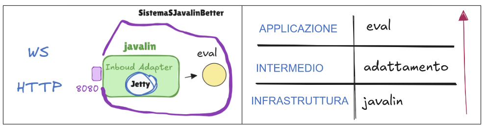

La realizzazione della funzione per calcolare il risultato dell'espressione data in Java è banale.
protected double eval(double x) {
return Math.sin(x) + Math.cos( Math.sqrt(3)*x);
}
La complessità sta nella gestione delle richieste di diverso tipo. Sebbene javalin permetta di gestire con codice molto simile sia le connessioni WebSocket che le interazioni HTTP, le due funzionalità sono profondamente diverse:
All'utente verrà presentata la seguente pagina html che presenta una sezione di input dove l'utente potrà selezioanre al x desiderata, una serie di bottoni per scegliere la modalità di comunicazione e un'area di output dove comparirà il risultato.
Per quanto riguarda la distribuzione mediante una immagine Docker, sono stati realizzati i seguenti file: sistemaSJavalin.yaml e Dockerfile.
Sono dipendente dalla tecnologia di javalin, ma cerco di organizzare il codice in maniera opportuna.
Sulla base dei principi di Separation of Concerns e Clean Architecture il sistema verrà sviluppato con la seguente infrastruttura:

Il sistema avrà quindi una architettura a Layer:
Come già detto, javalin gira sopra il Server Jetty. Poiché ogni volta che arriva un messaggio, Jetty
assegna il compito di eseguire il codice dentro onMessage a un thread preso dal suo Thread Pool, se arrivano due messaggi quasi contemporaneamente vengono prelevati e sfruttati due thread distinti.
Questo significa che se ho una richiesta "lenta" dovuta ad una carico computazionale più alto (simulata con un ritardo) che arriva prima e una più veloce che arriva dopo, non sarà rispettato l'ordine di arrivo nelle risposte, ma arriverà prima la risposta veloce e poi quella lenta.
E' importante tenere a mente questo comportamento, perché è in contrasto con quanto avviene normalmente nelle WS, dove ci si aspetta un esecuzione sequenziale delle richieste ricevute.
Per la gestione delle richieste da parte dell'utente sono necessarie tre funzioni Javascript collegate ai pulsanti presentati all'utente che vadano ad inviare al server le richieste come specificato.
Per la realizzazione del server è stato realizzato il seguente codice.